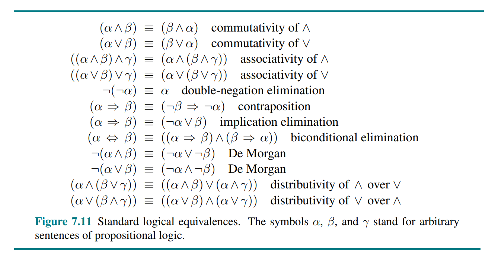

Artificial Intelligence - A Modern Approach (4th edition)
1 Introduction, p. 19 (35)
In which we try to explain why we consider artificial intelligence to be a subject most worthy of study, and in which we try to decide what exactly it is, this being a good thing to decide before embarking.
2.1 What is AI?
Human vs Rational, Thought vs Behavior
- Acting humanly: The Turing test approach
- Thinking humanly: The cognitive modeling approach
- Thinking rationally: The "laws of thought" approach
- Acting rationally: The rational agent approach
| Concept | Definition |
|---|---|
| Rational agent | One that acts so as to achieve the best outcome or, when there is uncertainty, the best expected outcome. |
| Standard model | The study and construction of agents that do the right thing. What counts as right is defined by the objective that we provide to the agent. |
| Limited rationality | Acting appropriately when there is not enough time to do all the computations one might like. |
| Value alignment problem | The problem of achieing agreement between our true preferences and the objective we put into the machine. |
1.2 The Foundations of Artificial Intelligence
1.2.1 Philosophy
| Concept | Definition |
|---|---|
| Dualism | There is a part of the human mind (or soul or spirit) that is outside of nature, exempt from physical laws. However, animals may be treated as machines. |
| Materialism / Physicalism / Naturalism | The brain's operation according to the laws of physics constitutes the mind. |
| Logical positivism | All knowledge can be characterized by logical theories connected to observation sentences that correspond to sensory inputs. It combines rationalism and empiricism. |
| Utilitarism | Rational decision making based on maximizing utility should apply to all spheres of human activity. |
| Deontological ethics | "Doing the right thing" is determined not by outcomes but by universal social laws that govern allowable actions |
1.2.2 Mathematics
| Concept | Definition |
|---|---|
| Formal logic | Gottlob Frege extended Boole's logic to include objects and relations (first-order logic). |
| Probability | Can be seen as generalizing logic to situations with uncertain information. |
| Statistics | The formalization of probability, combined with the availability of data. |
| Gödel incompleteness theorem | Showed that in any formal theory as strong as Peano arithmetic (the elementary theory of natural numbers), there are necessarily true statements that have no proof within the theory |
| Intractability | An intractable problem is a problem in which the only exact solution is one that takes too many resources (time, memory, etc.). In other words, a problem in which no efficient solution. |
| NP-completeness | Provides a NP-completeness basis for analyzing the tractability of problems |
1.2.3 Economics
| Concept | Definition |
|---|---|
| Decision theory | Combines probability theory with utility theory, provides a formal and complete framework for individual decisions made under uncertainty. |
| Game theory | The actions of one player can significantly affect the utility of another |
| Operations research | Addresses how to make rational decisions when payoffs from actions are not immediate but instead result from several actions taken in sequence |
| Satisficing | Making decisions that are “good enough,” rather than laboriously calculating an optimal decision |
1.2.4 Neuroscience
1.2.5 Psychology
| Concept | Definition |
|---|---|
| Behaviorism | Insisted on studying only objective measures of the percepts (or stimulus) given to an animal and its resulting actions (or response). |
| Cognitive psychology | Views the brain as an information-processing device |
A knowledge-based agent
According to Kenneth Craik, the steps of a knowledge-based agent are:
- the stimulus must be translated into an internal representation
- the representation is manipulated by cognitive processes to derive new internal representations
- these are in turn retranslated back into action
1.2.6 Control theory and cybernetics
| Concept | Definition |
|---|---|
| Modern control theory / stochastic optimal control | The design of systems that minimize a cost function over time |
1.3 The History of Artificial Intelligence
1.3.1 The inception of artificial intelligence (1943-1956)
| Concept | Definition |
|---|---|
| Hebbian learning | A simple updating rule for modifying the connection strengths between neurons. |
1.4 The State of the Art
1.5 Risks and Benefits of AI
2 Intelligent Agents, p. 54 (27)
In which we discuss the nature of agents, perfect or otherwise, the diversity of environments, and the resulting menagerie of agent types.
2.1 Agents and Environments
| Concept | Definition |
|---|---|
| Agent | Anything that can be viewed as perceiving its environment through sensors and acting upon that environment through actuators. |
| Percept | The content an agent’s sensors are perceiving |
| Percept sequence | The complete history of everything the agent has ever perceived |
| Agent function | Maps any given percept sequence to an action |
| Agent program | The internal implementation of the agent function |
2.2 Good Behavior: The Concept of Rationality
What is rational at any given time depends on four things:
- The performance measure that defines the criterion of success.
- The agent’s prior knowledge of the environment.
- The actions that the agent can perform.
- The agent’s percept sequence to date.
This leads to a definition of a rational agent:
For each possible percept sequence, a rational agent should select an action that is expected to maximize its performance measure, given the evidence provided by the percept sequence and whatever built-in knowledge the agent has.
| Concept | Definition |
|---|---|
| Omniscient agent | Knows the actual outcome of its actions and can act accordingly; but omniscience is impossible in reality. |
| Perfection | Rationality maximizes expected performance, while perfection maximizes actual performance. |
| To lack autonomy | To rely on the prior knowledge of its designer rather than on its own percepts and learning processes. |
2.3 The Nature of Environments
| Concept | Definition |
|---|---|
| Task environment (PEAS) | Consists of (Performance measure, Environment, Actuators, Sensors) |
2.3.2 Properties of task environments
Fully observable vs. partially observable: If an agent’s sensors give it access to the complete state of the environment at each point in time, then we say that the task environment is fully observable. If the agent has no sensors at all then the environment is unobservable.
Single-agent vs. multiagent: The key distinction is whether there exists an agent B, where B’s behavior is best described as maximizing a performance measure whose value depends on agent A’s behavior.
Deterministic vs. nondeterministic: If the next state of the environment is completely determined by the current state and the action executed by the agent(s), then we say the environment is deterministic
Episodic vs. sequential: In an episodic task environment, the agent’s experience is divided into atomic episodes that do not depend on the actions taken in previous episodes. In sequential environments, on the other hand, the current decision could affect all future decisions.
Static vs. dynamic: If the environment can change while an agent is deliberating, then we say the environment is dynamic for that agent; otherwise, it is static. If the environment itself does not change with the passage of time but the agent’s performance score does, then we say the environment is semidynamic.
Discrete vs. continuous: The discrete/continuous distinction applies to the state of the environment and to the percepts and actions of the agent. For example, the chess environment has a finite number of distinct states.
Known vs. unknown: Refers to the agent's state of knowledge about the rules of the environment. In a known environment, the outcomes (or outcome probabilities) for all actions are known.
The hardest case is partially observable, multiagent, nondeterministic, sequential, dynamic, continuous, and unknown.
2.4 The Structure of Agents
| Concept | Definition |
|---|---|
| Agent architecture | Computing device with physical sensors and actuators, that the agent program will run on |
| Condition–action rule | A connection from a condition to an action. (if A then B) |
| Transition model | Knowledge about how the environment responds to actions and the passing of time |
| Sensor model | Knowledge about how the state of the world is reflected in the agent’s percepts |
| Model-based agent | An agent which uses a transistion and sensor model to maintain an internal representation of the environment. Reflex agents, goal-based agent and utility-based agents may or may not be model-based. |
| Utility function | An internalization of the performance measure |
agent = architecture + program
A simple reflex agent selects actions on the basis of the current percept, ignoring the rest of the percept history. Requires a fully observable environment.
A model-based reflex agent handles partial observability by maintaining an internal representation of the environment that depends on the percept history. Requires a transition model and a sensor model.
A goal-based agent keeps track of a set of goals it is trying to achieve, and chooses an action that will (eventually) lead to the achievement of its goals.
A utility-based agent uses a utility function that measures its preferences among states of the world. Then it chooses the action that leads to the best expected utility, where expected utility is computed by averaging over all possible outcome states, weighted by the probability of the outcome.
A learning agent can be divided into four conceptual components:
- Critic: tells the learning element how well the agent is doing with respect to a fixed performance standard.
- Learning element: uses feedback from the critic and determines how the performance element should be modified to do better in the future.
- Performance element: what we previously have considered to be the entire agent: it takes in percepts and decides on actions
- Problem generator: is responsible for suggesting actions that will lead to new and informative experiences.
How the components of agents programs work
In an atomic representation each state of the world is indivisible - it has no internal structure.
A factored representation splits up each state into a fixed set of variables or attributes, representation each of which can have a value.
In an structured representation, objects and their various relationships can be described exlicitly.
3 Solving Problems by Searching, p. 81 (47)
In which we see how an agent can look ahead to find a sequence of actions that will eventually achieve its goal.
| Concept | Definition |
|---|---|
| Problem-solving agent | Plans ahead: to consider a sequence of actions that form a path to a goal state. Uses atomic representations. |
| Planning agent | Uses factored or structured representations of states |
3.1 Problem-Solving Agents
In a fully observable, deterministic, known environment, the solution to any problem is a fixed sequence of actions. With that information, an agent can follow this four-phase problem-solving process:
- Goal formulation
- Problem formulation
- Search
- Execution
3.1.1 Search problems and solutions
A search problem can be defined formally by defining the following
- State space
- Initial state
- Goal states
- Actions (
ACTIONS(state) => { ...actions }) - Transition model (
RESULT(state, action) => state') - Action cost function (
ACTION-COST(state, action, state') => cost)
| Concept | Definition |
|---|---|
| State space | A set of possible states that the environment can be in |
| Path | A sequence of actions |
| Solution | A path from the initial state to a goal state |
| Optimal solution | The solution with the lowest path cost |
3.2 Example Problems
3.3 Search Algorithms
| Concept | Definition |
|---|---|
| Frontier | The nodes that are reachable from the nodes that have been visited |
| Node | { STATE, PARENT, ACTION, PATH-COST } |
| Queue | IS-EMPTY(), POP(), TOP() (PEEK), ADD() |
In best-first search, the next node to visit is the one in the frontier with the minimum value of some evaluation function . This may be used as a generalization of Dijkstra, BFS, DFS, greedy best-first search and A*, etc.
We call a search algorithm a graph search if it checks for redundant paths and a tree-like search if it does not check. Best-first-search is a graph search.
3.4 Uninformed Search Strategies
Breadth-first search (BFS) uses a FIFO queue. Can also be implemented with best-first search and the evaluation function .
Uniform-cost search is Dijkstra's algorithm, and uses a priority queue.
Depth-first search (DFS) uses a stack (LIFO queue). Can also be implemented with best-first search and the evaluation function . DFS does not necessarily find the optimal solution, making it incomplete.
Backtracking search is a variant of DFS where only one successor is generated at a time rather than all successors, and successors are generated by modifying the current state rather than allocating memory for a brand new state. For this to work, we need to ba able to undo each action when we backtrack.
Depth-limited search is a variant of DFS with a depth limit.
Iterative deepening search solves the problem of picking a good depth limit value for a depth-limited search. The preferred uninformed search method when the search state space is larger than can fit in memory and the depth of the solution is not known.
Bidirectional best-first search simultaneously searches forward from the initial state and backwards from the goal state(s), hoping that the two searches will meet.

3.5 Informed (Heuristic) Search Strategies
h(n) = estimated cost of the cheapest path from the state at node n to a goal state.
| Concept | Definition |
|---|---|
| Admissible heuristic | One that never overestimates the cost to reach a goal. |
| Consistent heuristic | . Every consistent heuristic is also admissible. |
| Pruning | Eliminating possibilities from consideration without having to examine them |
| Search contour | Nodes inside a given contour have costs less than or equal to the contour value. |
Greedy best-first search is a form of best-first search that expands first the node with the lowest h(n) value - the node that appears to be closest to the goal. I.e.
A* search is a form of best-first search that uses the evaluation function . A* is cost-optimal with an admissible heuristic. It is optimally efficient with a consistent heuristic.
3.5.4 Satisficing search
Weighted A* search uses the evaluation function
There are a variety of suboptimal search algorithms, which can be characterized by the criteria for what counts as “good enough.” In bounded suboptimal search, we look for a solution that is guaranteed to be within a constant factor W of the optimal cost. Weighted A* provides this guarantee. In bounded-cost search, we look for a solution whose cost is less than some constant C. And in unbounded-cost search, we accept a solution of any cost, as long as we can find it quickly (for example speedy search, which minimizes action count).
3.5.5 Memory-bounded search
Beam search limits the size of the frontier.
An alternative version of beam search doesn’t keep a strict limit on the size of the frontier but instead keeps every node whose -score is within of the best -score.
// TODO
3.6 Heuristic Functions
3.6.2 Generating heuristics from relaxed problems
| Concept | Definition |
|---|---|
| Relaxed problem | A problem with fewer restrictions on the actions. The state-space graph of the relaxed problem is a supergraph of the original state space because the removal of restrictions creates added edges in the graph. |
The cost of an optimal solution to a relaxed problem is an admissible heuristic for the original problem. Furthermore, because the derived heuristic is an exact cost for the relaxed problem, it must obey the triangle inequality and is therefore also consistent.
If a collection of admissible heuristics is available for a problem and none of them is clearly better than the others, which should we choose? As it turns out, we can have the best of all worlds, by defining .
3.6.3 Generating heuristics from subproblems: Pattern databases
The idea behind pattern databases is to store exact solution costs for every possible subproblem instance.
By combining two pattern databases from separate subproblems and discarding the intersection, we get a disjoint pattern database.
3.6.4 Generating heuristics with landmarks
For each landmark and for each other vertex in the graph, we compute and store , the exact cost of the optimal path from to . We then have the following efficient (although inadmissible) heuristic:
However, the following differential heuristic is admissible:
3.6.6 Learning heuristics from experience
Each experienced solution to a problem provides an example (goal, path) pair. From these examples, a learning algorithm can be used to construct a function h that can (with luck) approximate the true path cost for other states that arise during search.
4 Search in Complex Environments, p. 128 (36)
In which we relax the simplifying assumptions of the previous chapter, to get closer to the real world.
4.1 Local Search and Optimization Problems
| Concept | Definition |
|---|---|
| Complete-state formulation | Every state has all the components of a formulation |
solution, but they might not all be in the right place.
Local search algorithms operate by searching from a start state to neighboring states, without keeping track of the paths, nor the set of states that have been reached.
4.1.1 Hill-climbing search
The hill-climbing search algorithm (or greedy local search) keeps track of one current state and on each iteration moves to the neighboring state with highest value - that is, it heads in the direction that provides the steepest ascent. It terminates when it reaches a “peak” where no neighbor has a higher value.
Hill climbing can get stuck for any of the following reasons:
- Local maxima: a peak that is higher than each of its neighboring states but lower than the global maximum.
- Ridges: Ridges result in a sequence of local maxima that is very difficult for greedy algorithms to navigate.
- Plateaus: A plateau is a flat area of the state-space landscape. It can be a flat local maximum, from which no uphill exit exists, or a shoulder, from which progress is possible.
One answer is to keep going when we reach a plateau - to allow a sideways move in the hope that the plateau is really a shoulder.
Stochastic hill climbing chooses at random from among the uphill moves; the probability of selection can vary with the steepness of the uphill move. This usually converges more slowly than steepest ascent, but in some state landscapes, it finds better solutions.
First-choice hill climbing implements stochastic climbing by generating successors randomly until one is generated that is better than the current state.
Random-restart hill climbing, which adopts the adage, “If at first you don’t succeed, try, try again.” It conducts a series of hill-climbing searches from randomly generated initial states, until a goal is found.
4.1.2 Simulated annealing
4.1.3 Local beam search
The local beam search algorithm keeps track of k states rather than just one. It begins with k randomly generated states. At each step, all the successors of all k states are generated. If any one is a goal, the algorithm halts. Otherwise, it selects the k best successors from the complete list and repeats.
In a variant called stochastic beam search, successors are chosen with probability proportional to the successor’s value, thus increasing diversity.
4.1.4 Evolutionary algorithms
// TODO
4.3 Search with Nondeterministic Actions
| Concept | Definition |
|---|---|
| Belief state | A set of physical states that the agent believes are possible |
In partially observable and nondeterministic environments, the solution to a problem is no longer a sequence, but rather a conditional plan (sometimes called a contingency plan or a strategy) that specifies what to do depending on what percepts agent receives while executing the plan. We also use a RESULTS function that returns a set of possible outcome states.
4.3.2 AND–OR search trees
A solution for an AND–OR search problem is a subtree of the complete search tree that
- has a goal node at every leaf,
- specifies one action at each of its OR nodes,
- includes every outcome branch at each of its AND nodes.
An AND–OR search problems cannot find cyclic solutions (trying something until it eventually succeeds).
4.4 Search in Partially Observable Environments
| Concept | Definition |
|---|---|
| Conformant problem | Sensorless problem, the agent's percepts provide no information at all. |
| Coerce | Perform a sequence of steps that will result in a specific state, independent of the starting state. |
| Monitoring, filtering, and state estimation | Maintaining one’s belief state |
4.4.1 Searching with no observation
If we assume that illegal actions have no effect on the environment, then it is safe to take the union of all the actions in any of the physical states in the current belief state. If an illegal action might lead to catastrophe, it is safer to allow only the intersection.
The agent necessarily achieves the goal if every state in the belief state satisfies IS-GOAL(s).
The preceding definitions enable the automatic construction of the belief-state problem formulation from the definition of the underlying physical problem. Once this is done, we can solve sensorless problems with any of the ordinary search algorithms of Chapter 3.
Alternatively, incremental belief-state search algorithms that build up the solution one physical state at a time and are often more efficient.
4.4.2 Searching in partially observable environments
We can think of the transition model between belief states for partially observable problems as occurring in three stages:
- The prediction stage computes the belief state resulting from the action
- The possible percepts stage computes the set of percepts that could be observed in the predicted belief state
- The update stage computes, for each possible percept, the belief state that would result from the percept
Putting these three stages together:
With this formulation, the AND–OR search algorithm can be applied directly to derive a solution. The solution will be a conditional plan.
With nondeterministic actions the PREDICT step grows the belief state, but the UPDATE step shrinks it back down—as long as the percepts provide some useful identifying information.
5 Constraint Satisfaction Problems, p. 164 (28)
In which we see how treating states as more than just little black boxes leads to new search methods and a deeper understanding of problem structure.
In this chapter we break open the black box by using a factored representation for each state: a set of variables, each of which has a value. A problem is solved when each variable has a value that satisfies all the constraints on the variable. A problem described this way is called a constraint satisfaction problem, or CSP.
5.1 Defining Constraint Satisfaction Problems
A constraint satisfaction problem consists of three components, X ,D, and C:
- is a set of variables, .
- is a set of domains, , one for each variable. A domain, , is a set of allowable values, for variable .
- is a set of constraints that specify allowable combinations of values.
CSPs deal with assignments of values to variables, . An assignment that does not violate any constraints is called a consistent or legal assignment. A complete assignment is one in which every variable is assigned a value, and a solution to a CSP is a consistent, complete assignment. A partial assignment is one that leaves some variables unassigned, and a partial solution is a partial assignment that is consistent. Solving a CSP is an NP-complete problem in general, although there are important subclasses of CSPs that can be solved very efficiently.
Many problems that are intractable for atomic state-space search can be solved quickly when formulated as a CSP.
| Concept | Definition |
|---|---|
| Unary constraint | Restricts the value of a single variable |
| Binary constraint | Relates two variables |
| Binary CSP | CSP with only unary or binary constraints |
| Implicit constraint | Does not state explicit tuples of values, e.g. an inequality |
| Linear constraint | Each variable appears only in linear form |
| Nonlinear constraint | A variable appears in nonlinear form |
| Disjunctive constraint | Constraining a solution space with multiple inequalities related by an OR statement |
| Global constraint | A constraint involving an arbitrary number of variables, e.g. Alldif |
| Preference constraint | Is not an absolute constraint that rules out a potential solution, but indicates which solutions are preferred |
| Resource constraint | E.g. Atmost(10, P1, P2, P3) (P1 + P2 + P3 <= 10) |
We can transform any CSP into one with only binary constraints.
// TODO: Dual graph
A constrained optimization problem (COP) is a CSP with preference constraints.
5.2 Constraint Propagation: Inference in CSPs
| Concept | Definition |
|---|---|
| Constraint propagation | To use the constraints to reduce the number of legal values for variables |
Consistency
A variable is node-consistent if all the values in the variable’s domain satisfy the variable’s unary constraints. We say that a graph is node-consistent if every variable in the graph is node-consistent.
A variable is arc-consistent with respect to another variable if for every value in the current domain there is some value in the domain that satisfies the binary constraint on the arc (edge) . A graph is arc-consistent if every variable is arc-consistent with every other variable. The most popular algorithm for enforcing arc consistency is called AC-3 (which is , where in number of binary constraints and is the size of each variable's domain).
A two-variable set is path-consistent with respect to a third variable if, for every assignment consistent with the constraints (if any) on , there is an assignment to that satisfies the constraints on and . The name refers to the overall consistency of the path from to with in the middle.
Stronger forms of propagation can be defined with the notion of -consistency. A CSP is -consistent if, for any set of variables and for any consistent assignment to those variables, a consistent value can always be assigned to any -th variable.
- -consistency is equivalent to node-consistency
- -consistency is equivalent to arc-consistency
- -consistency is equivalent to path-consistency (for binary constraint graphs)
A CSP is strongly -consistent if it is -consistent for all .
Domains may be represented by upper and lower bounds and managed by bounds propagation. We say that a CSP is bounds-consistent if for every variable X, and for both the lower-bound and upper-bound values of X, there exists some value of Y that satisfies the constraint between X and Y for every variable Y.
5.3 Backtracking Search for CSPs
// TODO
5.4 Local Search for CSPs
// TODO
5.5 The Structure of Problems
// TODO
6 Adversarial Search and Games, p. 192 (34)
In which we explore environments where other agents are plotting against us.
| Concept | Definition |
|---|---|
| Adversarial | Involving or characterized by conflict or opposition. |
| Perfect information | Fully observable |
| Zero-sum | What is good for one player is just as bad for the other |
6.1 Game Theory
There are at least three stances we can take towards multi-agent environments.
- To consider them in the aggregate as an economy, without having to predict the action of any individual agent.
- To consider the adversarial agents just as part of the environment.
- To explicitly model the adversarial agents with the techniques of adversarial game-tree search.
The last bullet is considered in this chapter.
6.2 Optimal Decisions in Games
In multiplayer games, the UTILITY function must return a vector of utilities.
With alpha-beta-pruning, one can compute the correct minimax decision without examining every state.
- is the value of the best (i.e., highest-value) choice we have found so far at any choice point along the path for MAX.
- is the value of the best (i.e., lowest-value) choice we have found so far at any choice point along the path for MIN.
The effectiveness of alpha–beta pruning is highly dependent on the order in which the states are examined.
A Type A strategy considers all possible moves to a certain depth in the search tree, and then uses a heuristic evaluation function to estimate the utility of states at that depth. A Type B strategy ignores moves that look bad, and follows promising lines “as far as possible.”
6.3 Heuristic Alpha-Beta Tree Search
The evaluation function should be applied only to positions that are quiescent - that is, positions in which there is no pending move (such as a capturing the queen) that would wildly swing the evaluation.
The horizon effect is more difficult to eliminate. It arises when the program is facing an opponent’s move that causes serious damage and is ultimately unavoidable, but can be temporarily avoided by the use of delaying tactics. One strategy to mitigate the horizon effect is to allow singular extensions, moves that are “clearly better” than all other moves in a given position, even when the search would normally be cut off at that point.
// TODO: understand singular extensions
Alpha–beta pruning prunes branches of the tree that can have no effect on the final evaluation, but forward pruning prunes moves that appear to be poor moves, but might possibly be good Forward pruning ones. Thus, the strategy saves computation time at the risk of making an error. Example: beam search and PROBCUT.
Another technique, late move reduction, works under the assumption that move ordering has been done well, and therefore moves that appear later in the list of possible moves are less likely to be good moves. But rather than pruning them away completely, we just reduce the depth to which we search these moves, thereby saving time. If the reduced search comes back with a value above the current α value, we can re-run the search with the full depth.
For common positions, such as the start and end of a chess game, one may utilize lookup tables derived from statistics of previous games to predict the best move.
6.4 Monte Carlo Tree search
For games with high branching factors (such as Go, with >300) alpha-beta search is not viable, and we may instead use a strategy called Monte Carlo tree search (MCTS).
Monte Carlo tree search maintains a search tree and grows it on each iteration of the following four steps:
- Selection: Starting at the root of the search tree, we choose a move (guided by the selection policy), leading to a successor node, and repeat that process, moving down the tree to a leaf.
- Expansion: We grow the search tree by generating a new child of the selected node.
- Simulation: We perform a playout from the newly generated child node, choosing moves for both players according to the playout policy. These moves are not recorded in the search tree.
- Back-propagation: We now use the result of the simulation to update all the search tree nodes going up to the root.
6.5 Stochastic Games
A game tree in a stochastic game must include chance nodes in addition to MAX and MIN nodes.
We can only calculate the expected value of a position: the average over all possible outcomes of the chance nodes. This leads us to the expectiminimax value for games with chance nodes, a generalization of the minimax value for deterministic games.
For algorithms that cut off search, the evaluation function must return values that are a positive linear transformation of the probability of winning (or of the expected utility, for games that have outcomes other than win/lose).
If the utility function is bounded, one may utilize alpha-beta-pruning.
6.6 Partially Observable Games
// TODO
6.7 Limitations of Game Search Algorithms
Because calculating optimal decisions in complex games is intractable, all algorithms must make some assumptions and approximations. Alpha–beta search uses the heuristic evaluation function as an approximation, and Monte Carlo search computes an approximate average over a random selection of playouts.
One limitation of alpha–beta search is its vulnerability to errors in the heuristic function.
A second limitation of both alpha–beta and Monte Carlo is that they are designed to calculate (bounds on) the values of legal moves. But sometimes there is one move that is obviously best (for example when there is only one legal move), and in that case, there is no point wasting computation time to figure out the value of the move - it is better to just make the move.
A third limitation is that both alpha-beta and Monte Carlo do all their reasoning at the level of individual moves. Clearly, humans play games differently: they can reason at a more abstract level, considering a higher-level goal
7 Logical Agents, p. 226 (43)
In which we design agents that can form representations of a complex world, use a process of inference to derive new representations about the world, and use these new representations to deduce what to do.
7.1 Knowledge-Based Agents
The central component of a knowledge-based agent is its knowledge base, or KB. A knowledge base is a set of sentences. Each sentence is expressed in a language called a knowledge representation language and represents some assertion about the world. When the sentence is taken as being given without being derived from other sentences, we call it an axiom.
7.2 The Wumpus World
7.3 Logic
The syntax of the representation language specifies all the sentences that are well formed. A logic must also define the semantics, or meaning, of sentences. The semantics defines the truth of each sentence with respect to each possible world. If a sentence is true in model , we say that satisfies , alternatively that is a model of . We use the notation to mean the set of all models of .
entails if and only if, in every model in which is true, is also true. I.e. .
*Model checking** is to enumerate all possible models to check that is true in all models in which KB is true, that is, that
An inference algorithm is complete if it can derive any sentence that is entailed.
7.4 Propositional Logic: A Very Simple Logic
The atomic sentences consist of a single proposition symbol. Complex sentences are constructed from simpler sentences, using parentheses and operators called logical connectives:
- (not)
- (and)
- (or)
- (implies)
- (if and only if)
7.5 Propositional Theorem Proving
Logical equivalence: two sentences and are logically equivalent if they are true in the same set of models. We write this as . (Note that is used to make claims about sentences, while is used as part of a sentence.) This is equivalent to a bidirectional entailment.
For any sentences and , if and only if the sentence () is valid. (Deduction theorem)
A sentence is valid if it is true in all models. Valid sentences are also known as tautologies.
A sentence is satisfiable if it is true in, or satisfied by, some model.

if and only if the sentence is unsatisfiable.
The preceding corresponds exactly to the standard mathematical proof technique of proof by contradiction, or reductio ad absurdum.
The best-known inference rule is called Modus Ponens:
In many practical cases, finding a proof can be more efficient because the proof can ignore irrelevant propositions, no matter how many of them there are.
One final property of logical systems is monotonicity, which says that the set of entailed sentences can only increase as information is added to the knowledge base.
7.5.2 Proof by resolution
The propositional resolution rule:
A resolution-based theorem prover can, for any sentences and in propositional logic, decide whether .
According to the Ground resolution theorem: If a set of clauses is unsatisfiable, then the resolution closure of those clauses contains the empty clause.
| Concept | Definition |
|---|---|
| Conjunction | |
| Disjunction | |
| Clause | A disjunction of literals, e.g. |
| Horn clause | A clause of which at most one literal is positive, |
| Goal clause | A clause with no positive literals |
| Definite clause | A clause of which exactly one literal is positive |
A sentence expressed as a conjunction of clauses is said to be in conjunctive normal form or CNF.
Forward chaining is an example of the general concept of data-driven reasoning. It runs in linear time and is sound and complete. Backward chaining is a form of goal-directed reasoning. It is essentially identical to AND-OR-GRAPH-SEARCH and runs in linear time.
7.6 Effective Propositional Model Checking
DPLL (the Davis–Putnam algorithm) embodies three improvements over the simple TT-Entails?: Early termination, Pure symbol heuristic and Unit clause heuristic. Some further tricks that enable it to solve large scale problems are Component analysis, Variable and value ordering, Intelligent backtracking, Random restarts and Clever indexing.

WalkSAT is a local search SAT algorithm. It is sound, but not complete.
7.7 Agents Based on Propositional Logic
Fluents or state variables are associated with a specific time step, e.g. would indicate a death between time step zero and one. By convention, the percept for a given time step happens first, followed by the action for that time step, followed by a transition to the next time step.
The frame problem: information is lost from one time step to the next because the effect axiom fails to state what remains unchanged as the result of an action.
The solution to the problem involves changing one’s focus from writing axioms about actions to writing axioms about fluents. Thus for each fluent , we will have an axiom that defines the truth value of in terms of fluents (including itself) at time and the actions that may have occurred at time .
Qualification problem: There is no complete solution within logic; system designers have to use good judgment in deciding how detailed they want to be in specifying their model, and what details they want to leave out. (Probability theory is helpful).
8 First-Order Logic, p. 269 (29)
In which we notice that the world is blessed with many objects, some of which are related to other objects, and in which we endeavor to reason about them.
8.1 Representation Revisited
First-order logic, is a structured representation built around objects and relations. Relations in which there is only one value for a given input is also called a function.
8.2 Syntax and Semantics of First-Order Logic
An atomic sentence (or atom for short) is formed from a predicate symbol optionally followed by a parenthesized list of terms, such as . An atomic sentence is true in a given model if the relation referred to by the predicate symbol holds among the objects referred to by the arguments.
We can use logical connectives to construct more complex sentences.
First-order logic contains two standard quantifiers, called universal and existential. The universal quantifier is usually pronounced “For all ...”.
Notice that this is not logically equivalent to , because the variable is not necessarily a dog.
The existensial quantifier is usually pronounced “There exists an such that”.
By convention, variables are lowercase letters. A variable is a term all by itself, and as such can also serve as the argument of a function. A term with no variables is called a ground term.
The unique-names assumption assumes that every constant symbol refer to a distinct object. The closed-world assumption assumes that atomic sentences not known to be true are in fact false. Domain closure, means that each model contains no more domain elements than those named by the constant symbols. We call this database semantics.
8.3 Using First-Order Logic
8.4 Knowledge Engineering in First-Order Logic
9 Inference in First-Order Logic, p. 298 (34)
In which we define effective procedures for answering questions posed in first-order logic.
9.1 Propositional vs. First-Order Inference
The rule of Universal Instantiation (UI for short) says that we can infer any sentence obtained by substituting a ground term (a term without variables) for a universally quantified variable.
The rule of Existential Instantiation replaces an existentially quantified variable with a single new constant symbol. The existential sentence says there is some object satisfying a condition, and applying the existential instantiation rule just gives a name to that object. The new name is called a Skolem constant.
The question of entailment for first-order logic is semidecidable - that is, algorithms exist that say yes to every entailed sentence, but no algorithm exists that also says no to every nonentailed sentence.
9.2 Unification and First-order Inference
Unification is the process of finding substitutions that make different logical expressions look identical.
9.3 Forward Chaining
A complete forward chainging answers every query whose answers are entailed by any knowledge base of definite clauses. Rules of the form can be handled by forward chainging and are sufficient to cover a wide variety of interesting real-world systems.
FOL-FC-ASK is a sound and complete forward chaining algorithm for definite clause knowledge bases.
9.4 Backward Chaining (Except 9.4.2-9.4.5)
Backward chaining work backward from the goal, chaining through rules to find known facts that support the proof.
9.5 Resolution (Except 9.5.4-9.5.5)
Every sentence of first-order logic can be converted into an inferentially equivalent CNF sentence.
The steps of resolution are:
- Eliminate implications: Replace with
- Move inwards: Use De Morgan's laws
- Standardize variables: For sentences that use the same variable name twice, change the name of one of the variables.
- Skolemize: Eliminate existensial quantifiers with Skolem constants or Skolem functions. The general rule is that the arguments of the Skolem function are all the universally quantified variables in whose scope the existential quantifier appears.
- Drop universal quantifiers
- Distribute over
The resolution rule for first-order clauses is simply a lifted version of the propositional resolution rule. Propositional literals are complementary if one is the negation of the other; first-order literals are complementary if one unifies with the negation of the other.
Kurt Gödel was able to show, in his incompleteness theorem, that there are true arithmetic sentences that cannot be proved.
10 Knowledge Representation, p. 332 (30)
In which we show how to represent diverse facts about the real world in a form that can be used to reason and solve problems.
10.1 Ontological Engineering
General concepts such as Events, Time, Physical Objects, and Beliefs occur in many different domains. Representing these abstract concepts is sometimes called ontological engineering.
The general framework of concepts is called an upper ontology because of the convention of drawing graphs with the general concepts at the top and the more specific concepts below them.
10.2 Categories and Objects
The organization of objects into categories is a vital part of knowledge representation. Categories organize knowledge through inheritance. Subclass relations organize categories into a taxonomic hierarchy or taxonomy. We use set notation (, , etc.) and set terms (disjoint, partition, etc.) for describing relations between categories.
The most important aspect of measures is not the particular numerical values, but the fact that measures can be ordered.
Intrinsic properties belong to the very substance of the object, rather than to the object as a whole. When you cut an instance of stuff in half, the two pieces retain the intrinsic properties - things like density, boiling point, flavor, color, and so on. Their extrinsic properties - weight, length, shape, and so on - are not retained under subdivision. A category of objects that includes in its definition only intrinsic properties is then a substance, or mass noun (stuff); a class that includes any extrinsic properties in its definition is a count noun (thing).
10.3 Events
The objects of event calculus are events, fluents, and time points. The event of Shankar flying from San Francisco to Washington, D.C., is described as
Physical objects can be viewed as generalized events, in the sense that a physical object is a chunk of space-time.
(...) The only possibility is that denotes a single object that consists of different people at different times. To say that George Washington was president throughout 1790, we can write
10.4 Mental Objects and Modal Logic
Modal logic includes special modal operators that take sentences (rather than terms) as arguments. For Modal operators example, “A knows P” is represented with the notation , where is the modal operator for knowledge.
10.5 Reasoning Systems for Categories
10.5.1 Semantic networks
10.5.2 Description logics
10.6 Reasoning with Default Information
With nonmonotonicity, the set of beliefs does not grow monotonically over time as new evidence arrives. Nonmonotonic logics have been devised with modified notions of truth and entailment in order to capture such behavior.
The idea of circumscription is to specify particular predicates that are assumed to be “as false as possible” - that is, false for every object except those for which they are known to be true.
If we say that is to be circumscribed, a circumscriptive reasoner is entitled to assume unless is known to be true. Circumscription can be viewed as an example of a model preference logic.
Default logic is a formalism in which default rules can be written to generate contingent, nonmonotonic conclusions. A default rule looks like this:
This rule means that if is true, and if is consistent with the knowledge base, then may be concluded by default.
Belief revision to retract facts inferred from default knowledge in the face of new information. Problems arise with deeply nested inferences. Truth maintenance systems, or TMSs, are designed to handle exactly these kinds of complications.
11 Automated Planning, p. 362-403 (41)
In which we see how an agent can take advantage of the structure of a problem to efficiently construct complex plans of action.
11.1 Definition of Classical Planning
Classical planning is defined as the task of finding a sequence of actions to accomplish a goal in a discrete, deterministic, static, fully observable environment.
Planning researchers have invested in a factored representation using a family of languages called PDDL, the Planning Domain Definition Language, which allows us to express a polynomial number of actions with a single action schema, and does not need domain-specific knowledge.
PDDL uses database semantics. In PDDL, a state is represented as a conjunction of ground (no variables) atomic fluents (changes over time).
An action schema represents a family of ground actions. It consists of the action name, a list of all the variables used in the schema, a precondition and an effect. For example:
We can choose constants to instantiate the variables of the schema, yielding a ground (variable-free) action. This action is applicable in state if entails the precondition of . The result is defined as , formed by starting with , removing the negative literals in the action's effects (delete list) and adding the positive literals (add list).
Basic PDDL does not allow quantifiers, so instead we introduce a predicate that is true when nothing is on x.
11.2 Algorithms for Classical Planning
Forward search for planning uses heuristic search algorithms to solve classical planning problems. Without an accurate heuristic, the state space grows too large. However, it turns out that strong domain-independent heuristics can be derived automatically.
In backward search for planning we start at the goal and apply only relevant actions, reducing the branching factor significantly. Given a goal and an action , the regression from over gives us a state description ("the previous state") whose positive and negative literals are given by
However, the fact that backward search uses states with variables rather than ground states makes it harder to come up with good heuristics. The majority of current systems favor forward search.
SAT-based planners such as SATPLAN operate by translating a PDDL problem description into propositional form. The translation involves a series of steps:
- Propositionalize the actions: for each action schema, form ground propositions by substituting constants for each of the variables.
- Add action exclusion axioms saying that no two actions can occur at the same time
- Add precondition axioms
- Define the initial state
- Propositionalize the goal
- Add successor-state axioms for each fluent
The resulting translation is typically much larger than the original PDDL, but the efficiency of modern SAT solvers often more than makes up for this.
An alternative called partial-order planning represents a plan as a graph rather than a linear sequence: each action is a node in the graph, and for each precondition of the action there is an edge from another action (or from the initial state) that indicates that the predecessor action establishes the precondition. We search in the space of plans rather than world-states, inserting actions to satisfy conditions.
11.3 Heuristics for Planning
Neither forward nor backward search is efficient without a good heuristic function.
The ignore-preconditions heuristic drops all preconditions from actions. Every action becomes applicable in every state, and any single goal fluent can be achieved in one step.
It is also possible to ignore only selected preconditions of actions. The ease of manipulating the action schemas is the great advantage of the factored representation of planning problems, as compared with the atomic representation of search problems
The (inadmissible) ignore-delete-lists heuristic assumes that all goals and preconditions contain only positive literals. That makes it possible to make monotonic progress towards the goal - no action will ever undo progress made by another action. A simple hill-climbing search will easily find a solution to these problems (although it may not be an optimal solution).
In symmetry reduction we prune out of consideration all symmetric branches of the search tree except for one. For many domains, this makes the difference between intractable and efficient solving.
Sometimes it is possible to solve a problem efficiently by recognizing that negative interactions can be ruled out. We say that a problem has serializable subgoals if there exists an order of subgoals such that the planner can achieve them in that order without having to undo any of the previously achieved subgoals.
Relaxing a problem (to calculate a heuristic) does nothing to reduce the number of states, which may still be expensive. However, we can decrease the number of states by forming a state abstraction. The easiest form of state abstraction is to ignore some fluents.
A key idea in defining heuristics is decomposition: dividing a problem into parts, solving each part independently, and then combining the parts. The subgoal independence assumption is that the cost of solving a conjunction of subgoals is approximated by the sum of the costs of solving each subgoal independently.
11.4 Hierachical Planning
The basic formalism we adopt to understand hierarchical decomposition comes from the area of hierarchical task networks or HTN planning. The key additional concept is the high-level action or HLA.
At each level of hierarchical decomposition, a computational task is reduced to a small number of activities at the next lower level.
A high-level plan achieves the goal from a given state if at least one of its implementations achieves the goal from that state. This property has been called the downward refinement property for HLA descriptions.
In HLA, the agent will choose an implementation (a refinement) of the high level actions. We call this angelic nondeterminism, in contrast to demonic nondeterminism where an adversary makes the choices.
The descriptions of HLAs are derivable from the descriptions of their refinements. Since the chosen implementation is nondeterministic, the action description needs to include syntax for several possible effects, in addition to "maybe's": .
As with belief states, we may need to write approximate descriptions. We will use two kinds of approximation: an optimistic description of an HLA may overstate the reachable set, while a pessimistic description may understate the reachable set. We detect plans that will and won’t work by checking the intersections of the optimistic and pessimistic reachable sets with the goal.
11.5 Planning and Acting in Nondeterminsitic Domains
11.5.1 Sensorless planning
In sensorless (and partially observable) planning we have to switch to an open-world assumption in which states contain both positive and negative fluents, and if a fluent does not appear, its value is unknown.
11.5.2 Contingent planning
When receiving a percept, we may add it to the belief state, as well as any preconditions for that percept.
Given a mechanism for computing exact or approximate belief states, we can generate contingent plans with an extension of the AND–OR forward search over belief states.
11.5.3 Online planning
Replanning presupposes some form of execution monitoring to determine the need for a new plan. Replanning may be needed if the agent’s model of the world is incorrect. (missing precondition, missing effect, missing fluent, etc.)
The online agent has a choice of (at least) three different approaches for monitoring the environment during plan execution:
- Action monitoring: before executing an action, the agent verifies that all the preconditions still hold.
- Plan monitoring: before executing an action, the agent verifies that the remaining plan will still succeed.
- Goal monitoring: before executing an action, the agent checks to see if there is a better set of goals it could be trying to achieve.
Plan monitoring cuts off execution of a doomed plan as soon as possible, rather than continuing until the failure actually occurs.
11.6 Time, Schedules, and Resources
Classical planning talks about what to do, in what order, but does not talk about time: how long an action takes and when it occurs. This is the subject matter of scheduling.
The approach we take is “plan first, schedule later”
The representation of resources as numerical quantities, such as , rather than as named entities, such as and , is an example of a technique called aggregation: grouping individual objects into quantities when the objects are all indistinguishable. Aggregation is essential for reducing complexity.
Scheduling with resource constraints is NP-hard.